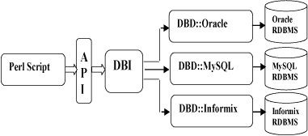

Copyright © tutorialspoint.com

|
This session will teach you how to access Oracle Database and other databases using PERL.
Starting from Perl 5 it has become very easy to write database applications using DBI. DBI stands for Database independent interface for Perl which means DBI provides an abstraction layer between the Perl code and the underlying database, allowing you to switch database implementations really easily. The DBI is a database access module for the Perl programming language. It defines a set of methods, variables, and conventions that provide a consistent database interface, independent of the actual database being used. Architecture of a DBI ApplicationDBI is independent of any database available in backend. You can use DBI whether you are working with Oracle, MySQL or Informix etc. This is clear from the following architure diagram. Here DBI is responsible of taking all SQL commands through the API, or Application Programming Interface, and to dispatch them to the appropriate driver for actual execution. And finally DBI is responsible of taking results from the driver and giving back it to the calling scritp. Notation and ConventionsThroughout this chapter following notations will be used and it is recommended that you should also follow the same convention.
Database ConnectionAssuming we are going to work with MySQL database. Before connecting to a database make sure followings:
Following is the example of connecting with MySQL database "TESTDB"
If a connection is established with the datasource then a Database Handle is returned and saved into $dbh for further use otherwise $dbh is set to undef value and $DBI::errstr returns an error string. INSERT OperationINSERT operation is required when you want to create your records into TEST_TABLE. So once our database connection is established, we are ready to create records into TEST_TABLE. Following is the procedure to create single record into TEST_TABLE. You can create many records in similar fashion. Record creation takes following steps
Using Bind ValuesThere may be a case when values to be entered is not given in advance. In such case binding values are used. A question mark is used in place of actual value and then actual values are passed through execute() API. Following is the example.
READ OperationREAD Operation on any databasse means to fetch some useful information from the database. So once our database connection is established, we are ready to make a query into this database. Following is the procedure to query all the records having AGE greater than 20. This will take four steps
Using Bind ValuesThere may be a case when condition is not given in advance. In such case binding values are used. A question mark is used in place of actual value and then actual value is passed through execute() API. Following is the example.
UPDATE OperationUPDATE Operation on any databasse means to update one or more records already available in the database. Following is the procedure to update all the records having SEX as 'M'. Here we will increase AGE of all the males by one year. This will take three steps
Using Bind ValuesThere may be a case when condition is not given in advance. In such case binding values are used. A question mark is used in place of actual value and then actual value is passed through execute() API. Following is the example.
In some case you would like to set a value which is not given in advance so you can use binding value as follows. In this example income of all males will be set to 10000.
DELETE OperationDELETE operation is required when you want to delete some records from your database. Following is the procedure to delete all the records from TEST_TABLE where AGE is equal to 30. This operation will take following steps.
Using do StatementIf you're doing an UPDATE, INSERT, or DELETE there is no data that comes back from the database, so there is a short cut to perform this operation. You can use do statement to execute any of the command as follows.
do returns a true value if it succeeded, and a false value if it failed. Actually, if it succeeds it returns the number of affected rows. In the example it would return the number of rows that were actually deleted. COMMIT OperationCommit is the operation which gives a green signal to database to finalize the changes and after this operation no change can be reverted back.Here is a simple example to call commit API.
ROLLBACK OperationIf you are not satisfied with all the changes and you want to revert back those changes then use rollback API. Here is a simple example to call rollback API.
Begin TransactionMany databases support transactions. This means that you can make a whole bunch of queries which would modify the databases, but none of the changes are actually made. Then at the end you issue the special SQL query COMMIT, and all the changes are made simultaneously. Alternatively, you can issue the query ROLLBACK, in which case all the queries are thrown away. begin_work API enables transactions (by turning AutoCommit off) until the next call to commit or rollback. After the next commit or rollback, AutoCommit will automatically be turned on again.
AutoCommit OptionIf your transactions are simple, you can save yourself the trouble of having to issue a lot of commits. When you make the connect call, you can specify an AutoCommit option which will perform an automatic commit operation after every successful query. Here's what it looks like:
Here AutoCommit can take value 1 or 0. Automatic Error HandlingWhen you make the connect call, you can specify a RaiseErrors option that handles errors for you automatically. When an error occurs, DBI will abort your program instead of returning a failure code. If all you want is to abort the program on an error, this can be convenient. Here's what it looks like:
Here RaiseError can take value 1 or 0. Disconnecting DatabaseTo disconnect Database connection, use disconnect API.
The transaction behaviour of the disconnect method is, sadly, undefined. Some database systems (such as Oracle and Ingres) will automatically commit any outstanding changes, but others (such as Informix) will rollback any outstanding changes. Applications not using AutoCommit should explicitly call commit or rollback before calling disconnect. Using NULL valuesUndefined values, or undef, are used to indicate NULL values. You can insert and update columns with a NULL value as you would a non-NULL value. These examples insert and update the column age with a NULL value:
Here qq{} is used to return q quoted string to prepare API. However, care must be taken when trying to use NULL values in a WHERE clause. Consider:
Binding an undef (NULL) to the placeholder will not select rows which have a NULL age! At least for database engines that conform to the SQL standard. Refer to the SQL manual for your database engine or any SQL book for the reasons for this. To explicitly select NULLs you have to say "WHERE age IS NULL". A common issue is to have a code fragment handle a value that could be either defined or undef (non-NULL or NULL) at runtime. A simple technique is to prepare the appropriate statement as needed, and substitute the placeholder for non-NULL cases:
Some other DBI functionsavailable_drivers
Returns a list of all available drivers by searching for DBD::* modules through the directories in @INC. By default, a warning is given if some drivers are hidden by others of the same name in earlier directories. Passing a true value for $quiet will inhibit the warning. installed_drivers
Returns a list of driver name and driver handle pairs for all drivers 'installed' (loaded) into the current process. The driver name does not include the 'DBD::' prefix. data_sources
Returns a list of data sources (databases) available via the named driver. If $driver is empty or undef, then the value of the DBI_DRIVER environment variable is used. quote
Quote a string literal for use as a literal value in an SQL statement, by escaping any special characters (such as quotation marks) contained within the string and adding the required type of outer quotation marks.
For most database types, quote would return 'Don''t' (including the outer quotation marks). It is valid for the quote() method to return an SQL expression that evaluates to the desired string. For example:
Methods Common to all Handleserr
Returns the native database engine error code from the last driver method called. The code is typically an integer but you should not assume that. This is equivalent to $DBI::err or $h->err. errstr
Returns the native database engine error message from the last DBI method called. This has the same lifespan issues as the "err" method described above. This is equivalent to $DBI::errstr or $h->errstr. rows
This returns the number of rows effected by previous SQL statement and equivalent to $DBI::rows. trace
DBI sports an extremely useful ability to generate runtime tracing information of what it's doing, which can be a huge time-saver when trying to track down strange problems in your DBI programs. You can use different values to set trace level. These values varies from 0 to 4. The value 0 means disable trace and 4 means generate complete trace. Interpolated Statements are ProhebitedIt is highly recommended not to use interpolated statements as follows:
There are following reasons to avoid interploated statements:
|
Copyright © tutorialspoint.com